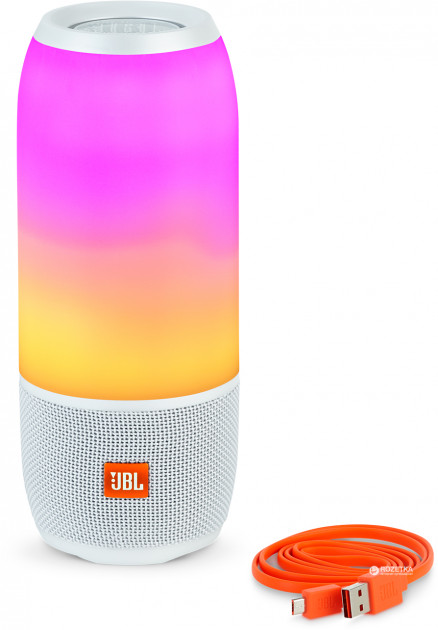

- Материал корпуса: Пластик, ткань
- Выходная мощность: 20 Вт
- Диапазон частот: 65 – 20000 Гц
- Размеры: 223 x 92 x 92 мм, 0.96 кг
Описание:
Выведите свои ощущения от прослушивания на новый уровень с помощью JBL Pulse 3, портативного водостойкого Bluetooth-динамика, сочетающего в себе объемное звучание с объемной системой цветомузыки. Вдохните жизнь в свою музыку, взяв с собой колонку со светодиодными лампами. Благодаря встроенному перезаряжаемому аккумулятору, обеспечивающему до 12 часов работы в режиме прослушивания, и водонепроницаемому корпусу (стандарт IPX7) модель Pulse 3 является идеальным выбором для тех, кто хочет пользоваться динамиком на пляже или у бассейна – или даже в воде (на глубине до 1 метра продолжительностью до 30 минут с плотно закрытими разъемами устройства).
При использовании технологии JBL Connect+ вы можете объединить в беспроводную сеть более 100 динамиков, поддерживающих эту технологию, и придать своей вечеринке новое звучание. Модель Pulse 3 также включает спикерфон с шумопонижением и эхокомпенсацией для безупречно четкой голосовой связи. Просто потрясите Pulse 3, чтобы создать световое шоу, синхронизированное с другими устройствами Pulse 3, а приложение JBL Connect+ позволяет настраивать светомузыку буквально на лету.
Беспроводная потоковая передача данных по Bluetooth
Установите связь между несколькими смартфонами или планшетами и слушайте музыку по очереди с исключительным объемным звучанием.
Светомузыка и звук 360°
Настраиваемая объемная система светомузыки в составе JBL Pulse 3 создаст вам особую атмосферу, вдохнув новую жизнь в ваши любимые композиции.
Цвета:
(нажав на картинку с нужным цветом, вы перейдете на страницу для заказа)